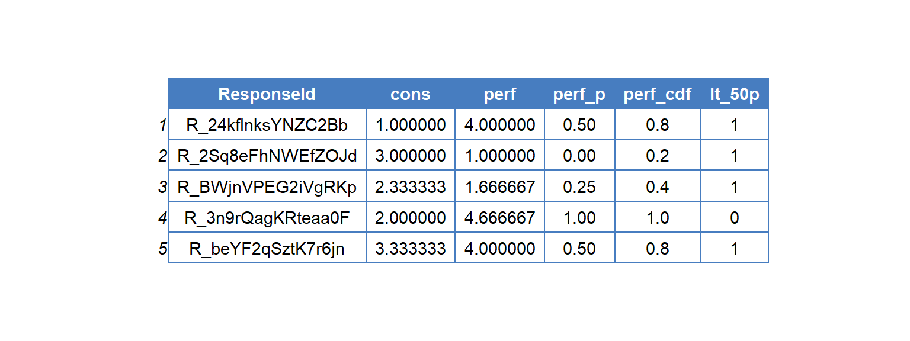
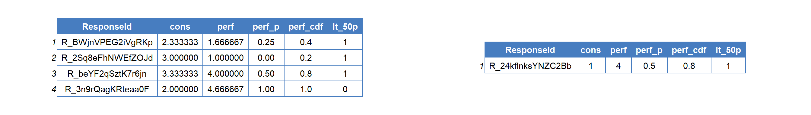

11.1 Random Samples of Observations
- While very much beyond the scope of this lecture, randomly splitting a data set is a key operation for many statistical procedures.
- Researchers who want to cross-validated their models subset their data (sometimes \(n\) times) to evaluate its performance
- When a model’s statistical assumptions are violated, a researcher can implement a procedure called bootstrapping that uses resampling methods to estimate a parameters standard error.
- In short, knowing how to randomly sample a data set opens the door to many other statistical procedures
- The following sections will define the structural form, and show a few examples, however this section is not ended to go in depth into resampling methods.
11.1.1 Structural Form of sample_ Functions
sample_x(data, size, replace, weight, …)
- sample_x denotes the sampling function you would like to use.
- data: specifies the data frame you would like to operate on.
- size: specifies the size of the sample you would like to take either in absolute or relative terms (depending on whether you use sample_n() or sample_frac()).
- replace: logical value specifying whether a data frame should be sampled with replacement (i.e., bootstrap).
- weight: a vector of weights equal to the number of observations in the data frame specifying how likely each observation is to be sampled (useful for stratified sampling).
11.1.2 Using sample_n() and sample_frac()
- sample_frac() and sample_n() only differ in terms of the size argument
- For sample_frac() you specify a proportion, relative to data argument.
- For sample_n() you specify an absolute number of rows for the output data.
- Arguably, sample_frac() is more robust to changes in upstream code.
- For example, if you catch a mistake in your data cleaning prior to taking a random sample of your data set, sample_frac() will still sample relative to this new data frame.
- In contrast, sample_n() does not adjust to changes in your code and will still resample based on the n you define.
- Putting differences aside, lets consider how a researcher could create a training and test data frame to evaluate their model’s performance.
- When randomly sampling the data frame, always make sure to use set.seed() so that the results are reproducible.
- I will also include and example that shows you how to work around the potential pitfalls of sample_n() by avoiding hard coding its size argument.

Figure 11.1: Original Data
Example 11.1 Using sample_n() and anti_join() to create training and test sets, hardcoding size.
set.seed(123)
training <- sample_n(survey_data, size = 4, replace = FALSE)
holdout <- anti_join(survey_data, training)

Figure 11.2: Using sample_n() to randomly sample data
Example 11.2 Using sample_frac() and anti_join() to create training and test sets.
set.seed(123)
training <- sample_frac(survey_data, size = .8, replace = FALSE)
holdout <- anti_join(survey_data, training)
Figure 11.3: Using sample_frac to randomly sample data
Example 11.3 Using sample_n() and anti_join() to create training and test sets, without hardcoding n.
set.seed(123)
rel_n<- nrow(survey_data)*.8
training <- sample_n(survey_data, size = rel_n, replace = FALSE)
holdout <- anti_join(survey_data, training)
Figure 11.4: Avoiding Hard Coding n